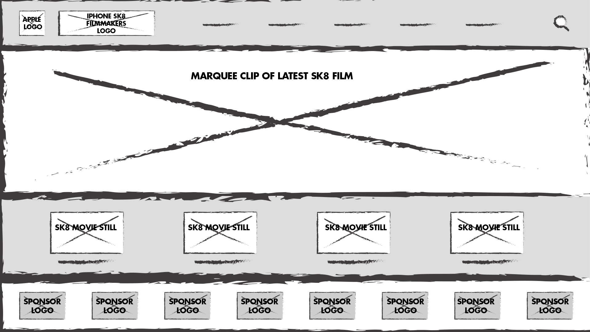
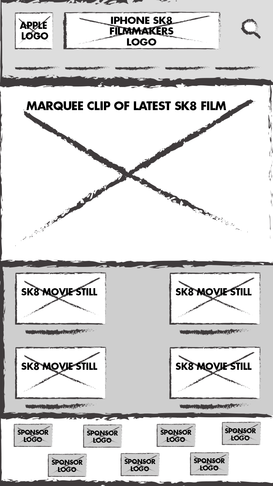

Apple iPhone SK8 Films
Font-Family: SF Pro Display, SF Pro Text
Brand Colors:
Brand Menu:
Brand Page:
Brand Text:
Hobby Menu:
Hobby Page:
Hobby Text:


This would be a hobby site extension of the Apple site. It would be dedicated to Skateboarding films recorded on iPhones, since iPhones can be perfect for that - they're light, good cameras, and are way less expensive than pro cameras. Plus, you can edit them right there on the phone.
This site would be very light on text and still photography. No stories, all movies. The hobby colors would be the same as the brand colors (monochrome) - All actual color would be from the films, which would be very colorful - both literally and symbolically. People would never get the feeling they are at a monochrome site (they are), just that nothing is vying for their attention except the films. Having said that, Apple uses a light blue for their links colors - perhaps the SK8 Films site would use a complimentary light orange instead.
I envision the nav bar being the Apple logo, the iPhone SK8 Film logo and then nav links for "Directors", "Skaters", "Locations", "Bands" (every skate film needs good music), and "Merch".
The field directly beneath that would be 100% VW featuring a rad clip from the latest film, or maybe a few clips of a few films. Super rad and over-the-top. This is also where any relevant headlines/text blurbs would be.
Below that would be links to the full movies (again 100% VW), categorized by location (maybe country, maybe city, maybe park/exact location). Once you click on a 'movie still', this bar drops away and all the space between the nabber and footer displays the movie. Perhaps the footer loses the sponsor logos and fills with text about the film.
And finally, beneath that would be sponsors logos that are links to their web sites.
The biggest difference between the desktop and mobile sites would be that the mobile site launches clips in full screen mode, rotating to landscape automatically.